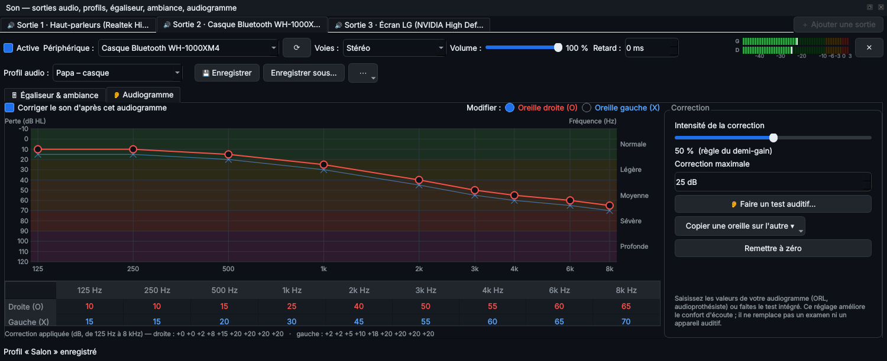
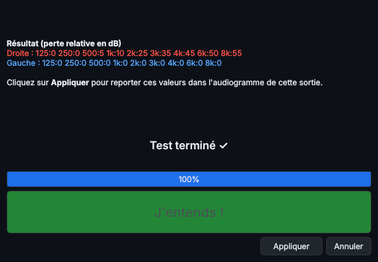

8. Audiogramme et test auditif
L'onglet Audiogramme de chaque sortie adapte le son à votre audition, oreille par oreille.
Saisir un audiogramme
- Recopiez dans le tableau les valeurs de votre audiogramme (ORL, audioprothésiste), en dB HL, de 125 Hz à 8 kHz.
- Vous pouvez aussi faire glisser les points du graphique : oreille droite = O rouge, oreille gauche = X bleue.
- Copier une oreille sur l'autre et Remettre à zéro accélèrent la saisie.

Audiogramme : oreille droite en rouge (O), gauche en bleu (X).
Activer la correction
- Cochez Corriger le son d'après cet audiogramme.
- Les fréquences moins bien entendues sont renforcées, selon la règle du demi-gain : une perte de 40 dB donne +20 dB.
- Réglez si besoin l'intensité (de 0 à 100 %) et la correction maximale (en dB), pour garder un son confortable.
La courbe de correction appliquée s'affiche sous le graphique. L'audiogramme est enregistré avec le profil audio : chaque personne de la maison peut avoir le sien.
Faire un test auditif
- Branchez le casque que vous utiliserez pour écouter.
- Réglez le volume de Windows à votre niveau habituel, et ne le changez plus.
- Cliquez sur Faire un test auditif.
- Un bip monte doucement. Appuyez sur J'entends (ou la barre Espace) dès que vous le percevez.
- Chaque fréquence est testée sur chaque oreille. Le test dure 5 à 8 minutes.
- Le résultat remplit l'audiogramme de la sortie choisie.

Fin du test auditif : Appliquer reporte le résultat.
Le test est indicatif : il ne remplace pas un examen par un professionnel de l'audition.
◀ 7. Réglages du son et profils audio · Sommaire · 9. Plusieurs sorties et plusieurs lecteurs ▶